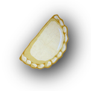

Pierogies are a delicious food.
"PieroGIS" are like Pierogies, but are a play on [G]eographic [I]nformation [S]ystem.
The Pittsburgh PieroGIS Map is a GIS for the places you get your Pierogies.
Have a favorite local Pierogie spot? Know where a secret kitchen with the best dough and potatoes and/or other thing is combined into a scrumptious comfort food item? Tweet the location to @maptimePGH (bonus points for geotagged photographs)! We'll use the data points to show you how to make this map in the upcoming Maptime tutorial on Web-mapping Leaflet (of course, we know we could just search The Internet for this info ourselves, but we also plan to show you how to take the data you've captured and turn it into geodata).
Special Thanks to Jonah Adkins at Maptime Hampton Roads Virginia (@maptimehrva) for creating the original Haunted tutorial, which we used to create this map. By extension, thanks to Andy Woodruff who created this Leaflet tutorial for MaptimeBoston, as well as Nate Goldman for his cool burger map, which inspired the UI for Maptime HRVA's tutorial.
Many thanks to Hollen Barmer and her meticulous work on the 2015 Pittsburgh Lenten Fish Fry Map! She has generously provided some of her relevant data for display here.
And of course, thanks to the Maptime! community!